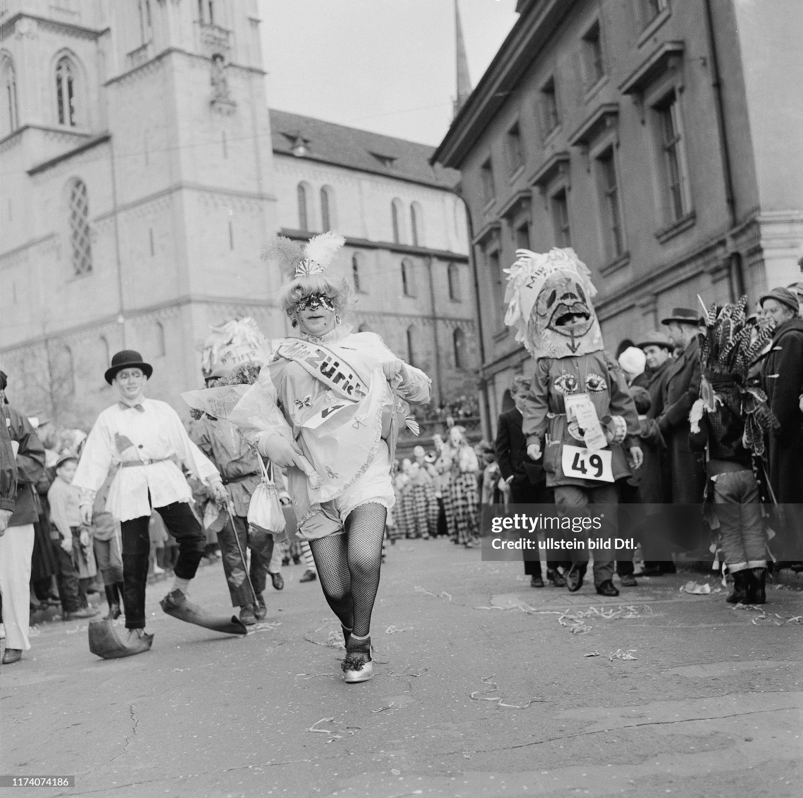

It's Carnival in Zurich!
From February 15th to March 3th

Events
- Carnevale di Zurigo (fino al 22.02.)
Durante il fine settimana, nella città di Zurigo si svolge il "Züri Carneval". Gruppi musicali suonano la tipica musica carnevalesca a "Hirschenplatz" e a "Münsterhof". Questa musica è chiamata "Guggenmusik". Sabato e domenica, adulti e bambini sfilano per le strade in costume. Il programma completo è disponibile sul sito web. Gratuito.
- In costume per le strade di Zurigo (fino al 22.02.)
Vivete un fine settimana colorato, ricco di musica e colori. Sabato si terrà una grande festa per bambini al "Münsterhof". Ci saranno musica, giochi e il clown Pipo racconterà barzellette. Sempre sabato, a partire dalle 13:33, si terrà una sfilata per bambini. La partenza sarà dalla "Neumarkt-Brunnen". Domenica si terrà la grande sfilata. Partenza: 14:31. Percorso: "Münsterbrücke", "Limmatquai", "Rudolf-Brun-Brücke", "Uraniastrasse", "Rennweg", "Münsterhof". Chi lo desidera può presentarsi in costume. Gratuito.
www.zurichcarneval.ch
In questo sito trovate tutti gli eventi anche gratuiti organizzati a Zurigo tutto l'anno!
The Map-agenda
Contattami se anche tu sei un affamato in viaggio!
Questa è la città che fa per te!